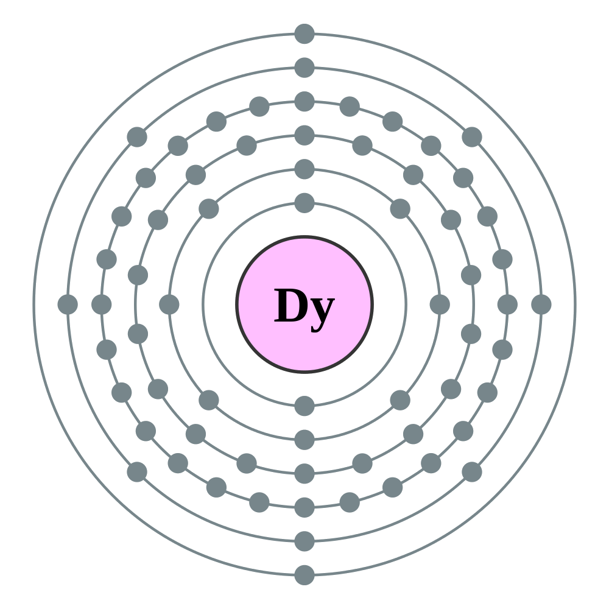

←
→
Dysprosium is a chemical element with symbol Dy and atomic number 66. It is a rare earth element with a metallic silver luster. Dysprosium is never found in nature as a free element, though it is found in various minerals, such as xenotime. Naturally occurring dysprosium is composed of seven isotopes, the most abundant of which is Dy.
Dysprosium was first identified in 1886 by Paul Émile Lecoq de Boisbaudran, but it was not isolated in pure form until the development of ion exchange techniques in the 1950s. Dysprosium has relatively few applications where it cannot be replaced by other chemical elements. It is used for its high thermal neutron absorption cross-section in making control rods in nuclear reactors, for its high magnetic susceptibility in data storage applications, and as a component of Terfenol-D (a magnetostrictive material). Soluble dysprosium salts are mildly toxic, while the insoluble salts are considered non-toxic.